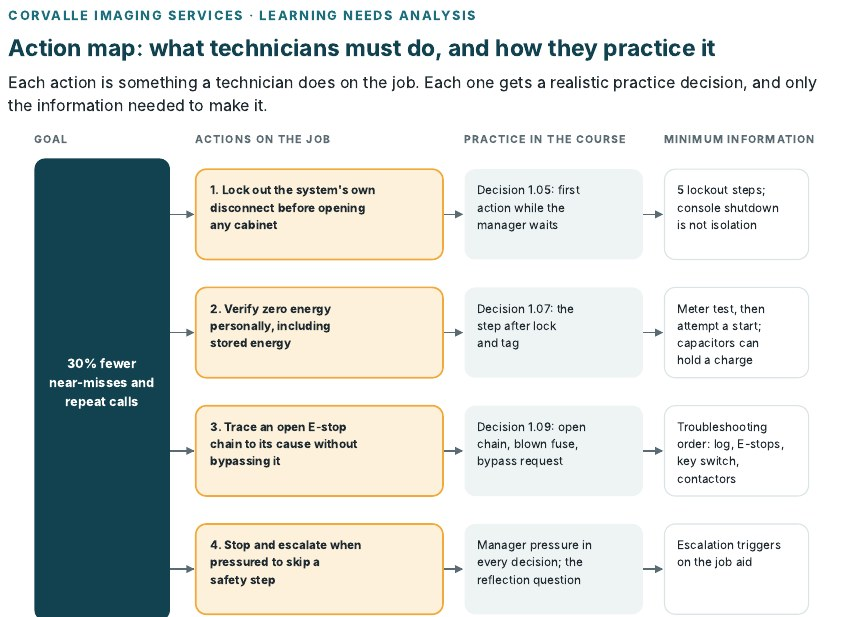

Lisa Ferns, MEd, MS
Instructional Designer & eLearning Developer
I design and build learning that changes how people work, from branching simulations for medical equipment engineers to AI-assisted workflows that cut development time from days to minutes. 15+ years across healthcare, higher education and K-12, with a background in English, instructional design and graphic design.
Design
Needs analysis, learning objectives, scenario and branching design, storyboarding, ADDIE, Merrill, Gagné
Build
Articulate Storyline 360 and Rise 360, software simulations, SCORM and xAPI, LMS deployment (Docebo, Cornerstone, Canvas)
AI-enabled
Prompt design with my CRIT framework, Microsoft Copilot, Articulate AI Assistant, workflow automation
Media
Camtasia, Vyond, Powtoon, Canva, Adobe Creative Cloud, video editing and voiceover
Quality
WCAG and Section 508 accessibility, Review 360 SME reviews, ISO 9001 quality process
Selected Work
Four areas of my work. Each page walks through real projects: the problem, what I built, and the result.

Critical Decisions: Medical Equipment Service
A complete project for a fictional client: needs analysis, design, a branching Storyline scenario, a job aid and an evaluation report.
See the full case study →
AI-Enabled Instructional Design
I treat AI as a structured content transformer, not a replacement for instructional judgment.
Four workflows →
Software Simulation & eLearning
I build interactive eLearning that turns what SMEs know into skills people can use on the job.
Four projects →
Design Process
Needs analysis, SME interviews, branching storyboards, and the QA process that makes every build audit-ready.
Analysis to QA →
Technical Media & Visual Design
I produce video, animation and graphics that help an expert's knowledge land with learners.
Video and infographics →What colleagues say
Lisa is more than deserving of a rare Excelling rating. Her attitude and approach to development is infectious; she uplifts everyone around her and stakeholders are consistently complimenting her collaborative and friendly approach.
Lisa's accessibility and technical expertise were instrumental in ensuring the project was completed on time. Her ability to simplify complex concepts made collaboration seamless and enhanced efficiency.
Lisa maintained excellent lines of communication all throughout this project. She was very professional and it's obvious she has a high level of expertise in her job. It's almost as if she anticipated ahead of time what I wanted.
Lisa has much creative talent, works well under pressure, has confidence and a great attitude. ... This concept has now become a process and practice thanks, in large part, to Lisa's work.
About
Fifteen years of making complex material clear, usable, and memorable.
I design learning experiences and write educational content that helps people learn complex material quickly and retain it. Over 15+ years, I've worked across healthcare, higher education, and K-12 settings, always translating technical or academic material into something clear and usable.
Currently, I design simulations and branching courses at Philips Healthcare for field service engineers who service medical imaging systems. Before Philips, I was an instructional designer at Bryant University, a digital learning coordinator for Bishop Feehan High School and Franklin Public Schools, and a career advisor and online lecturer at the University of Rhode Island.
My background spans English, instructional design, and graphic design, which shows up in how I work: clear writing, sound learning theory, and a strong visual sense. I also write and design New England Vineyard Insider, a biweekly wine tourism newsletter I launched in 2026.